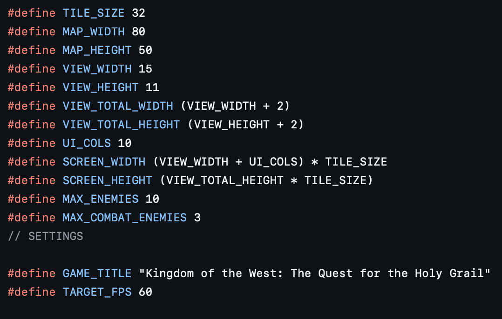
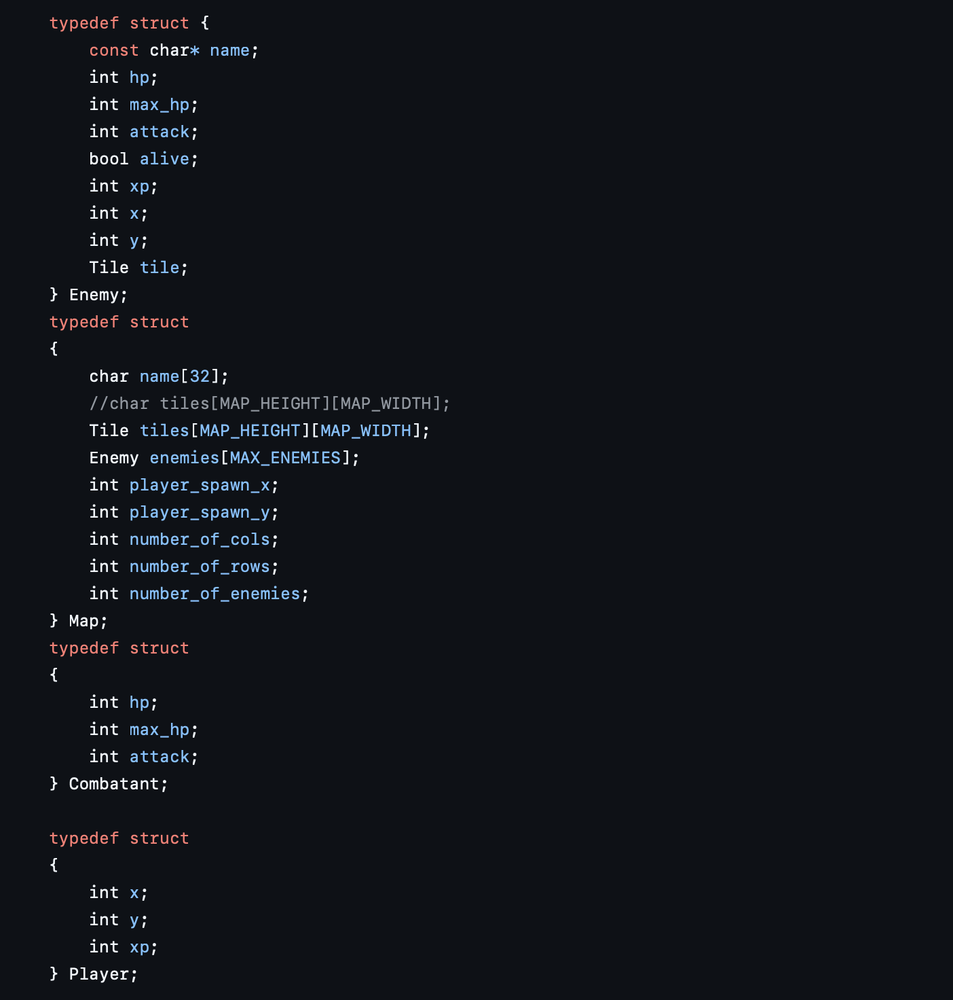

Recreational Programming: ASCII RPG
> boot sequence initiated...
A briefing about a RPG in development. One I know you will want to play oh so badly
Recreational Programming: ASCII RPG
Proposed Agenda: I might not follow it exactly. I babble alot
- game.h A quick peek into this mess
- game.c Just a few comments about this
- combat.c This is the jinky combat engine
- maps.c Where you will find minor usage
- world.map :D this is the magic
GAME_H: A look into the madness
#define

MACRO MACARONI:
A few thoughts- I am not 100% sure if any of this is going to stay the way it is. That might be because I don't fully understand it anymore and I know when I started I had to tweak the crap out of it a ton. The goal is to have a standard map size and to be able to generate other maps that fit this dimension. (Might Make sense later)
- The visable portion of the map is only a small piece of the map. Kind of like a viewport that makes it so the player can explore the map and not see the whole thing at once. The maps within maps concept will be like a dungeon crawler but more specific.
- MAX_ENEMIES I believe is there to control how many enemies are on a map at any given time. This is so I don't overwhelm my players. Little do they know that will change in the future and i will overwhelm them immediately. I wanted to make a game that was just super hard and probably unbeatable. Intentional and targeted difficulty. Why? I don't know. Its really my first game that will be worth even criticizing.
- The title. I promise you this has nothing to do with the Holy Grail. I was feeling rather tired of trying to come up with something fun and clever nobody will probably ever see. Background The game is a player who is exploring the Southwestern United States. There are things to fight and missions to accomplish. Its basically only Mohave County based and includes: Las Vegas, Golden Valley, Kingman, Bullhead, Laughlin, and Lake Havasu. There are a few hidden gems like Chloride and Santa Clause but each city/town breaks down into the litle towns and the neighborhoods. So the map sequence goes like this. Las vegas - Henderson - (some neighborhood). As you follow the map down it will be somewhat resembling that part. Will the whole thing be there? HELL NO! Maybe. I can't imagine my crazy mind not allowing me to go there at some point. I will show images of the maps later in this article.
PLAYER/ENEMY:
The Beans- In the Enemy Struct. Well.... you might say.... "Justin, this is quite simple and isn't very clever." Yep. Thats exactly the point right here. I have a sever case of crazy and if I spend time on the structs this early, fine tuning and featuring, knowing thyself, I will NEVER get this done. Its already not going to get done. Do you want to have a game that isn't playable but you can look at the source code and admire the Enemy struct? If so you are my kind of person and this game isn't for you. :D.
- So.... Right now the platform has no moving enemies. How boring right? They just chill and wait for you to stumble upon them and pick a fight. Most of this is going to change in the upgraded version that I intend to turn this into. I copied most of this from a tutorial I found. I had a hard time figuring out how the heck to start this game and deleted many lines. I had a flaw in my fundamentals. It was horribly incomplete. I have since been studying and playing with other ideas and now I feel like this will be overhauled into something I feel is more apporpriate. Consider the Following:
- I intend on keeping the enemies the way they are. Currently there is no battle screen. Essentially just a simple UI that has a few options. I intend on keeping it that way. This game is going to be a data driven game mostly. My original intention was to have a game that I can play with different data and have the maps change based on that data. literally nothing else. I created the game to teach and learn. Expect these structs to grow.
- The player struct is the most simple. That is because I haven't implemented the planned asset engine and the xp/incentive/punishment (oh yes... punishment) engine. This game will punish you. There are no participation rewards. The funny thing here and I will expose the biggest secret. I plan to make the players who are punished the most, the most rewarded. I really want the game to screw with the heads of people. I think it would be cool to create a game that targets the mind and exercises it. Reward the players who test the boundaries and get punished the most. The ones who simply play the game and abide by the rules will get their world as perfect and boring as they deserve.

To be continued....
— root@WASecurity